P04 — Nhập kho → Thông tin phiếu
Mở app → Nhập kho · Report PASS/FAIL · QA
390×844 — Before / After / Approved Home
BEFORE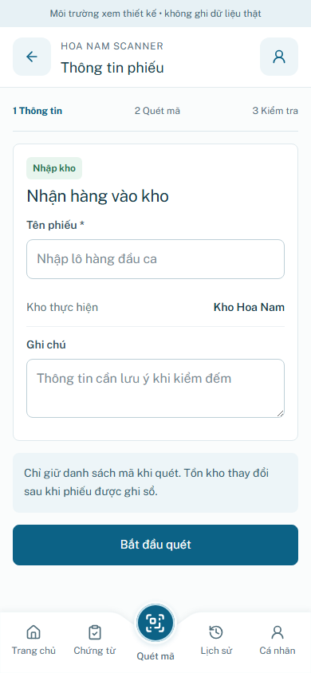
AFTER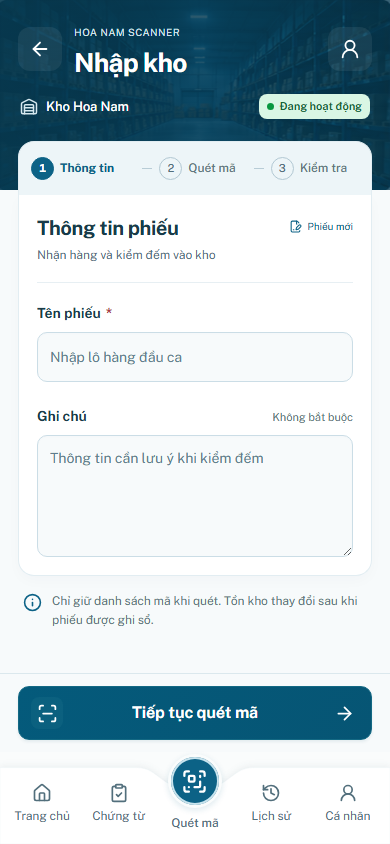
Home baseline đã chốt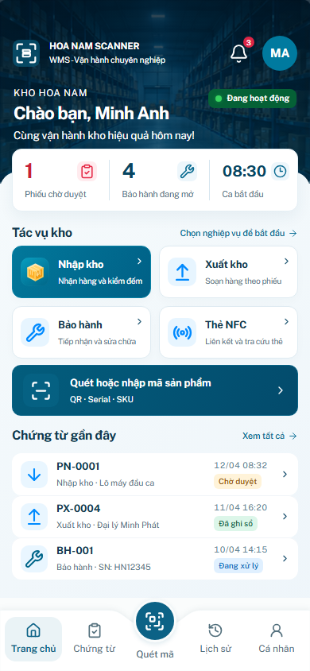
Field states / draft
Inline validation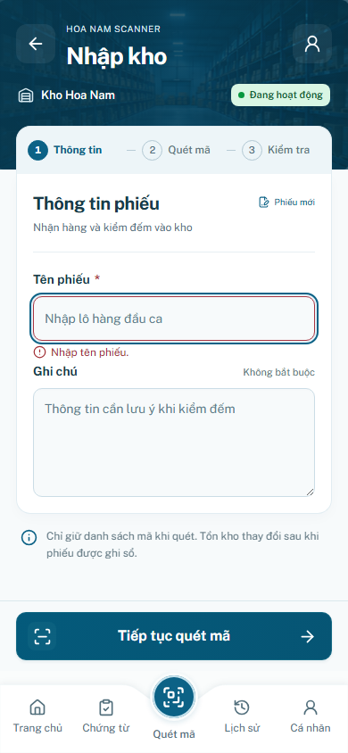
Filled form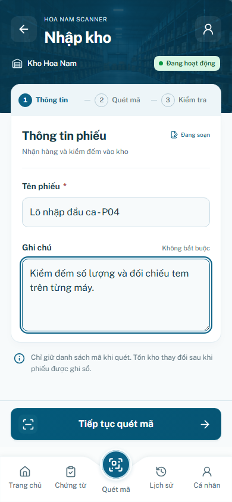
Draft đã có mã — quay lại từ scanner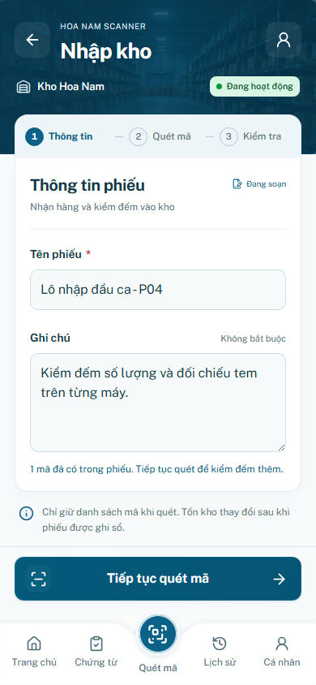
Before / After — 360 và430
BEFORE 360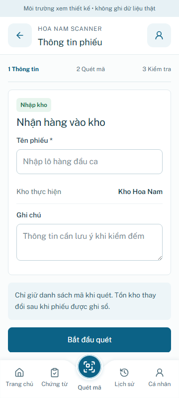
AFTER 360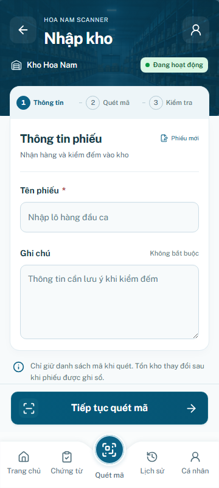
BEFORE 430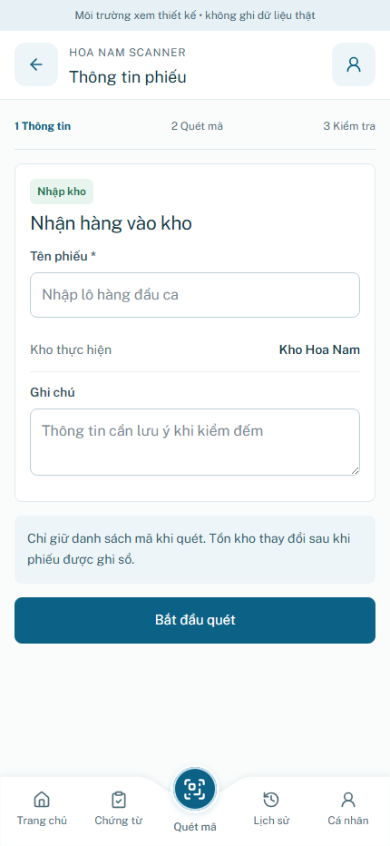
AFTER 430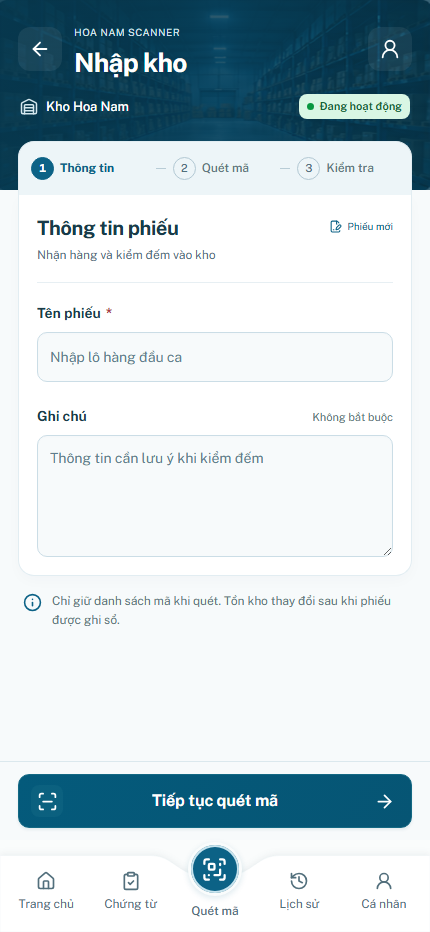
Overlay / keyboard proxy / paused
Draft confirm trong app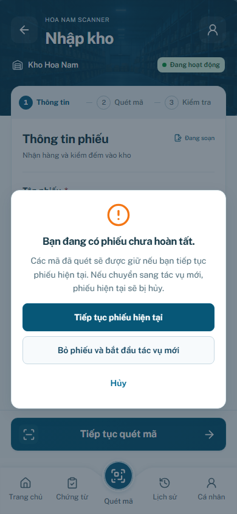
VisualViewport keyboard proxy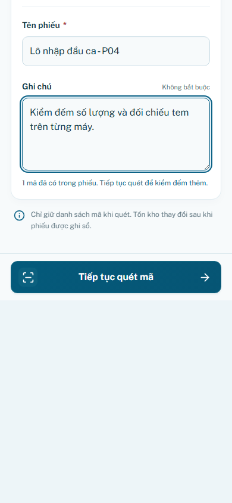
Paused — write route bị khóa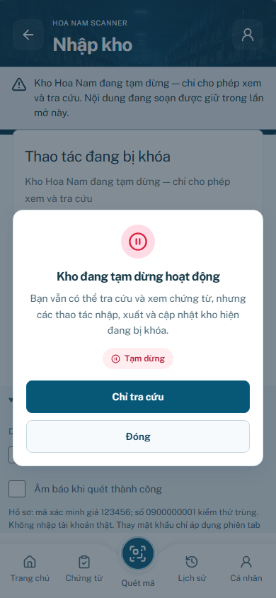
Approved baseline regression
| Viewport | Screen | Pixels changed | Max channel Δ/255 | Result |
|---|
| 360 | login | 0 | 0 | PASS |
| 360 | shift | 0 | 0 | PASS |
| 360 | home | 0 | 0 | PASS |
| 390 | login | 0 | 0 | PASS |
| 390 | shift | 0 | 0 | PASS |
| 390 | home | 0 | 0 | PASS |
| 430 | login | 0 | 0 | PASS |
| 430 | shift | 0 | 0 | PASS |
| 430 | home | 0 | 0 | PASS |
Raw comparison · Source freeze